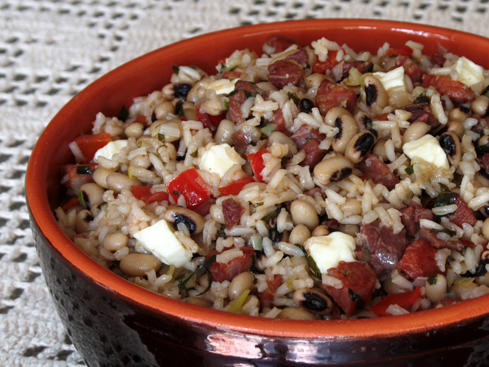

Baião de Dois

BAIÃO DE DOIS (RICE AND BLACK-EYED PEAS COOKED TOGETHER)
“Baião de dois” is a classic dish from Northeast Brazil. The recipe comes from the state of Ceará, but can be found all over Brazil,
and there are innumerable variations for it.
The curious name of this recipe is an allusion to “Baião” – a Brazilian traditional rhythm – and was immortalized by Humberto Teixeira
and Luís Gonzaga in the homonymous popular song. “Baião” style is danced in a close embrace, so as in this recipe rice and beans are cooked together.
Ingredients
- 250 g black-eyed peas
- 1 bay leaf
- 200 g basmati o parboiled rice
- 50 g bacon, chopped into small chunks
- 150 g jerked beef
- 100 g smoked sausage, chopped into small pieces
- 1 onion, chopped
- 2 green onions, chopped
- 2 teaspoons crushed garlic
- 1 chili pepper chopped
- 2 tablespoons clarified butter
- 1 ripe tomato, cut into cubes
- ½ red bell pepper, cut into cubes (optional)
- 2 tablespoons fresh coriander chopped
- 150 g fresh cheese diced
Preparation method
- Cut jerked beef into small pieces, eliminate nerve tissue and fat and leave to soak overnight, changing the water at least three-four times.
The next day drain the meat and cook meat in a little water until tender. If you like, shred the meat.
- Wash the beans then soak them bay leaf for a few hours. Cook them with until beans are cooked through but not falling apart. Set aside the
beans with the cooking water.
- Fry the bacon pieces in a large frying pan until golden brown, add the chopped sausage, the cooked jerked beef, a bit of corn oil and sauté
for about 5 minutes.
- Add butter and onion, and let it cook until the onions soften up. Add garlic and chili pepper and continue to fry for another minute.
- Add the washed rice, the bell pepper and the salt. Stir-fry for a few minutes.
- Add tomatoes, coriander and green onions. You can use parsley instead of coriander.
- Add the cooked beans with the cooking water, stir, cover the pan and cook for about 10 minutes. If necessary add a little more boiling water.
- Turn off the flame and add the cheese, stir, cover the pan and let stand for a few minutes.
- This recipe can be served as a one dish meal or accompanied by fried cassava, fried plantains or fried beef jerky.